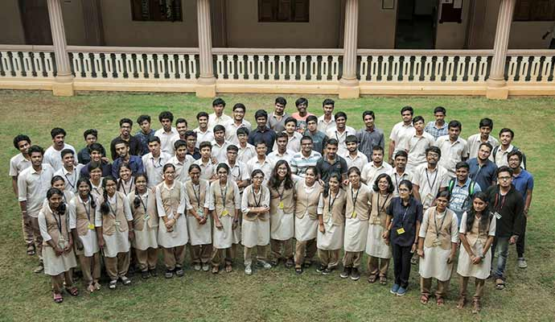

College isn't just about grades. Join clubs, build skills, make friends, and create memories that last a lifetime.
Recruiters don't just look at your CGPA. They look at what you've DONE.
Club experience shows leadership, teamwork, and initiative. "President of Chakravyuha" looks way better than just "B.Tech CSE" on your resume.
Clubs connect you with seniors, alumni, and industry professionals. Your club network can open doors to internships and job referrals.
Clubs teach you things classrooms don't — project management, public speaking, event planning, and real-world problem solving.
Clubs participate in national and international competitions. Winning hackathons, robotics contests, or design challenges adds serious weight to your profile.
Not sure what you love? Try different clubs. You might discover a passion for design, public speaking, or social service that changes your career path.
The friends you make in clubs often become your closest bonds in college. Shared goals and late-night projects create unbreakable friendships.
Most clubs have a selection process. Here's what to expect.
Every club conducts an introductory session in the first month. Attend as many as you can. Listen to what they do, their achievements, and their vision.
Clubs release application forms (usually Google Forms) after intro sessions. Fill them carefully. Be honest about your skills and interests.
Technical clubs like Chakravyuha may have coding tests, project reviews, or problem-solving challenges. Creative clubs may ask for a portfolio. Prepare well!
Shortlisted candidates face an interview. Be confident, show enthusiasm, and demonstrate why YOU are the right fit. Ask questions about the club too!
If selected, you'll receive an official welcome. Attend regular meetings, take up responsibilities, and start contributing to projects and events.
Here's a comprehensive list of clubs you can join.
The flagship technical club of Amrita Amaravati with 350+ members. Organizes hackathons, coding competitions, workshops on AI/ML, web dev, and more. The team behind this very challenge!
For the artists, designers, and creators. Works on posters, banners, video editing, UI/UX design, and social media content for college events.
Build robots, drones, and IoT devices. Participates in national robotics competitions. Perfect for hardware enthusiasts and tinkerers.
Sharpen your communication skills. Participates in debates, quizzes, elocutions, and literary competitions at inter-college levels.
Singing, dancing, instruments, and drama. Performs at college fests, cultural events, and inter-college competitions. The heartbeat of every celebration!
Capture moments that matter. Covers all college events, conducts photo walks, and teaches editing techniques. Great for building a portfolio.
Cricket, football, basketball, badminton, volleyball, and athletics. Regular practice sessions and inter-college tournaments. Stay fit, stay competitive!
Give back to society. Organizes blood donation camps, tree plantations, teaching underprivileged kids, and community service activities.
For future founders! Learn about startups, business models, pitching, and funding. Organizes startup weekends and connects with investors.
The crown jewel of Amrita Amaravati's technical community
Chakravyuha is the largest and most active technical club on campus. From first-year freshers to final-year seniors, everyone contributes to making it the powerhouse it is.
Attend their intro session in the first month. Fill the application form. Clear the coding/technical test. Ace the interview. Show passion, not just skills. Chakravyuha values enthusiasm and dedication above everything!
Ready to see where you'll live?
Explore Campus & Hostel Life